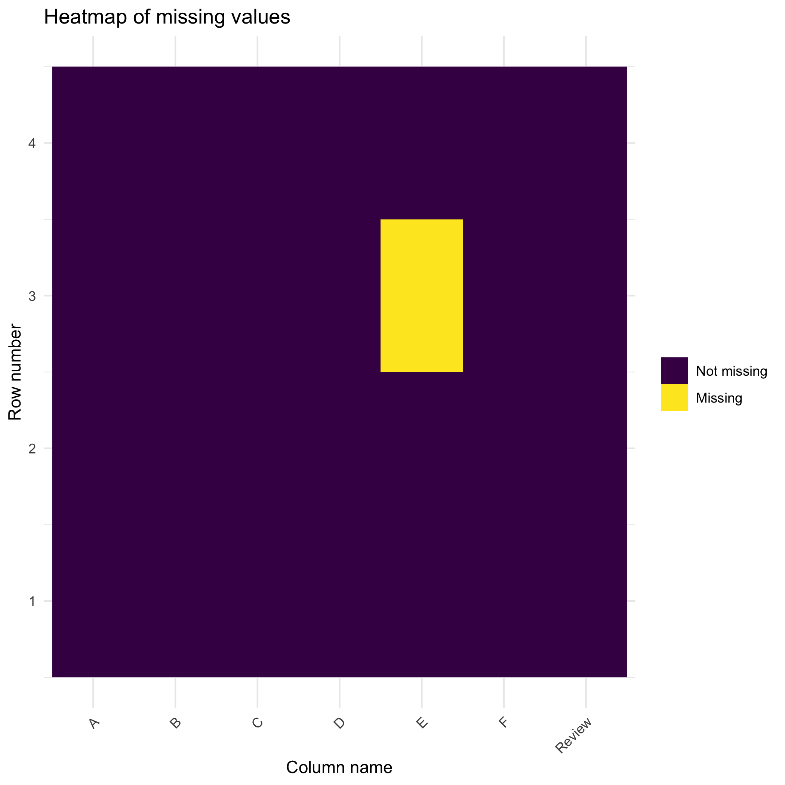
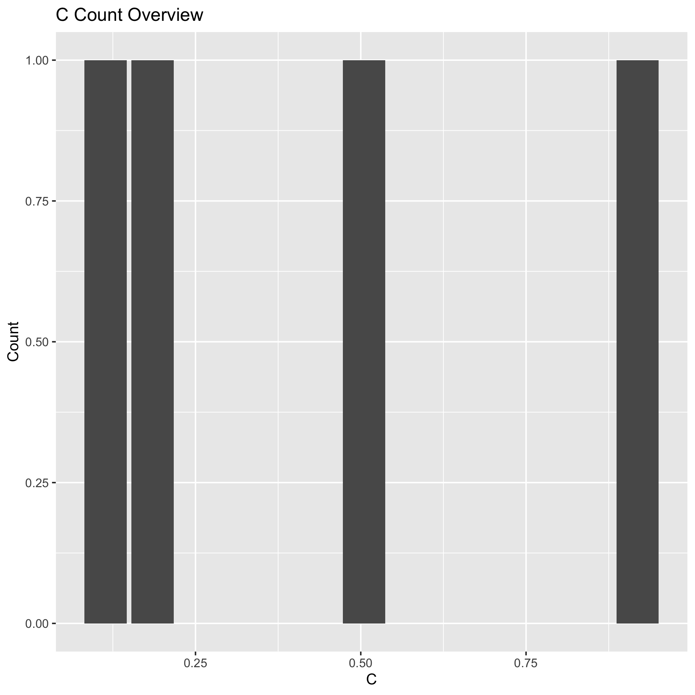
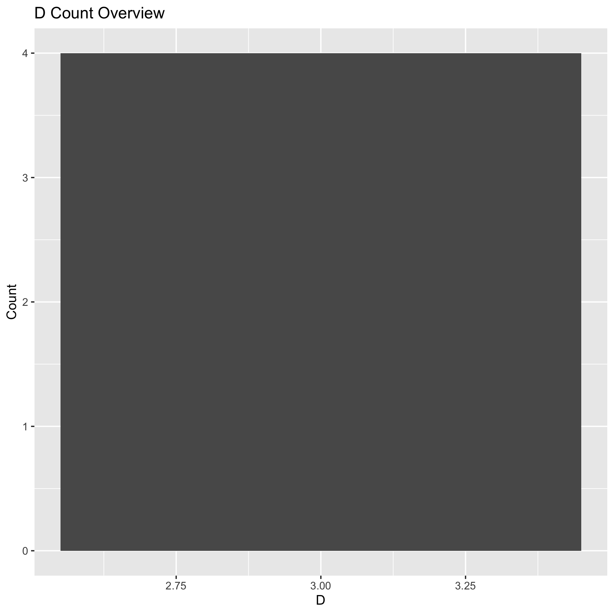

Before any analysis can commence it is a good idea to understand your data.
The RDataPeek package streamlines the answer to these questions:
This Document introduces you to the RDataPeek’s basics and show you how to apply them to your .csv files.
example.csv
As part of this vignette we have provided you with a custom sample of the typical company .csv file.
readr::read_csv("example.csv", col_types = col_type)
#> Warning: The following named parsers don't match the column names: movies
#> # A tibble: 4 x 7
#> A B C D E F Review
#> <dbl> <date> <dbl> <dbl> <chr> <chr> <chr>
#> 1 1 2013-01-02 0.919 3 test foo "But it's not. The plot isn't all th…
#> 2 1 2013-01-02 0.505 3 train foo "Young couple on the road, minding t…
#> 3 1 2013-01-02 0.185 3 <NA> foo Apparently, in the eyes of some - th…
#> 4 1 2013-01-02 0.114 3 train foo "I won't spoil it for you. Although …RDataPeek::sample_data() allows you to see a summary table of all your information in your selected .csv. “columns” give you the column name. “sample_record” provides you a random sample entry from the selected column. “data_type” provides with what type of data is in the column such as numeric, date or character. “summary” provides you with a summary statistic about that column.
RDataPeek::sample_data("example.csv")readr::read_csv("0_summary.csv", col_types = col_type)
#> Warning: Missing column names filled in: 'X1' [1]
#> # A tibble: 7 x 5
#> X1 columns sample_record data_type summary
#> <dbl> <chr> <chr> <chr> <chr>
#> 1 1 A 1 numeric Mean value is:…
#> 2 2 B 2013-01-02 Date No summary ava…
#> 3 3 C 0.9186815 numeric Mean value is:…
#> 4 4 D 3 numeric Mean value is:…
#> 5 5 E test character Number of uniq…
#> 6 6 F foo character Number of uniq…
#> 7 7 Review "But it's not. The plot isn't all tha… character Number of uniq…RDataPeek::missing_data_overview() provides you with a quick heat map of where your missing data or NAs are located in your .csv. Purple indicates where there is a value and yellow indicates where NA values are located.
RDataPeek::missing_data_overview("example.csv")
RDataPeek::word_bubble() creates a unique word cloud out of responses in your qualitative data. The larger the word the more frequent it appeared!
RDataPeek::word_bubble("example.csv", column = "Review")RDataPeek::explore_w_histograms() generates histograms for your selected quantitative columns.
RDataPeek::explore_w_histograms("example.csv", columns_list = c("C", "D"))
